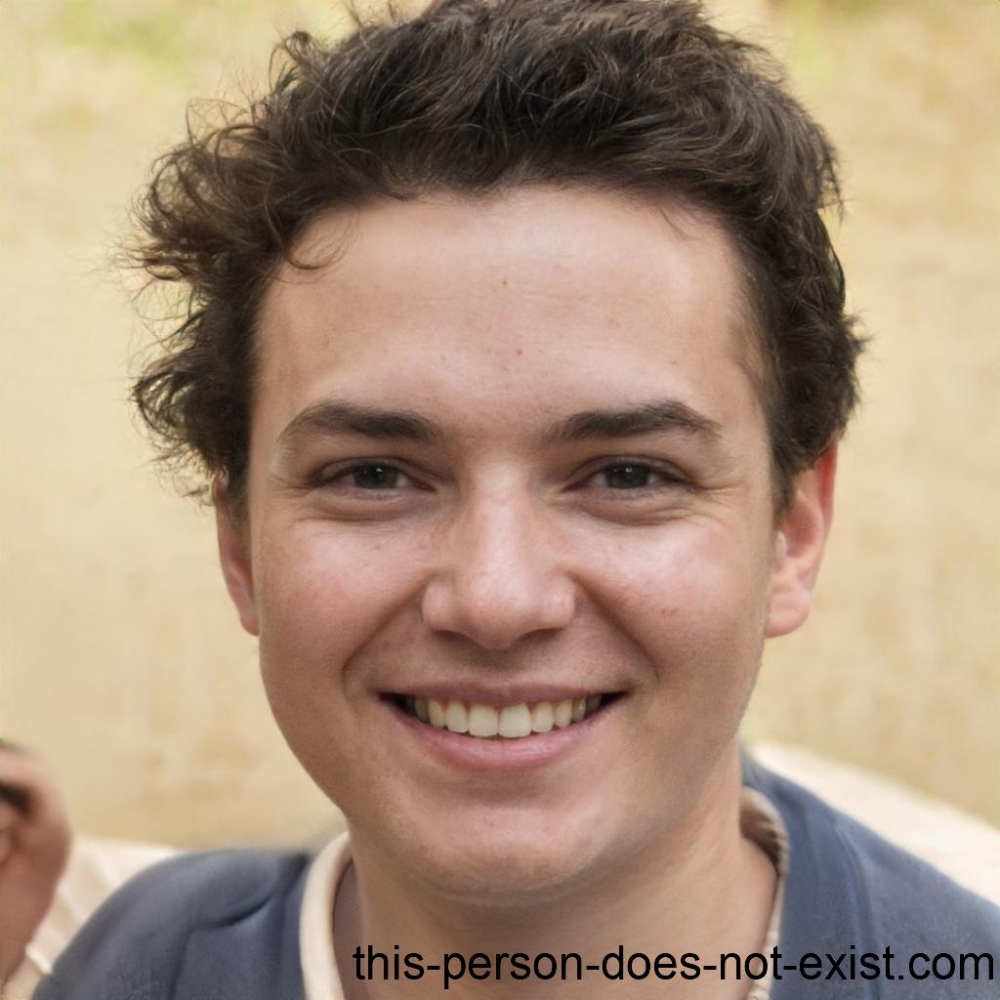

Personas
Introdução
Bem-vindo à página de personas do projeto! Aqui você encontrará uma lista de personas e antipersona que serão utilizados para projeto. Essas personas são pessoas ficticias, para definir nosso público-alvo, o qual foram selecionadas e baseadas no perfil de usuário, assim tendo base para definir as personas.
Definição
Foi escolhido 3 personas, encontradas na tabela 1, 2 e 3, e também foi escolhida 1 antipersona, encontrada na tabela 4. As personas são baseadas em usuários reais, e a antipersona é baseada em um usuário que não é o público-alvo do projeto. Foram escolhidos esses números pois no livro da Simone Diniz Junqueira Barbosa, "Interação Humano-Computador", é recomendado que sejam escolhidas de 3 a 5 personas, e 1 antipersona.
Personas
Luís Silva
|  |
|---|
| Nome: Luís Silva |
| Gênero: Masculino |
| Idade: 27 |
| Escolaridade: Ensino superior incompleto |
| Profissão: Designer gráfico |
| Relacionamentos: Solteiro, sem filhos |
| Status: Persona primária |
| Objetivos: Luís é um curioso que adora explorar tópicos aleatórios e aprender coisas novas. Ele utiliza o Wikipedia como uma fonte acessível para satisfazer sua curiosidade e descobrir novas informações sobre assuntos diversos. |
| Habilidades: Luís possui habilidades avançadas de pesquisa na internet e navegação em sites. Ele também tem uma boa compreensão da língua portuguesa e habilidades de leitura e escrita. |
| Tarefas: Luís utiliza o Wikipedia diariamente para explorar tópicos diversos e aprender coisas novas. Ele geralmente começa suas pesquisas com um tópico de seu interesse e acaba navegando por vários outros artigos relacionados. Luís também dedica tempo para revisar as informações encontradas e absorver novos conhecimentos. Ele utiliza o que aprendeu em suas conversas do dia-a-dia e para melhorar seu desempenho no trabalho. |
| Requisitos: Para satisfazer sua curiosidade, Luís precisa de acesso a uma ampla variedade de informações precisas e confiáveis, que possam ser facilmente compreendidas por ele. Ele também precisa de uma plataforma de pesquisa fácil de usar e acessível. |
| Expectativas: Luís espera que o Wikipedia seja uma fonte confiável e acessível de informações para satisfazer sua curiosidade e ajudá-lo a descobrir novas informações e ideias. Ele espera que a plataforma ajude a expandir seu conhecimento e contribua para seu crescimento pessoal e profissional. |
| Endereço: Luís mora com seu cachorro em Caxias do Sul - RS. |
| Locomoção: Luís se locomove em sua motocicleta. |
Tabela 1: Persona Primária 1, versão 1. (Fonte: Autores. 2023).
Maria Luíza Oliveira
 |
|---|
| Nome: Maria Luíza Oliveira |
| Gênero: Feminino |
| Idade: 16 |
| Escolaridade: Ensino médio |
| Profissão: Estudante |
| Relacionamentos: Solteira, sem filhos |
| Status: Persona primária |
| Objetivos: Maria Luíza é uma estudante do ensino médio e utiliza o Wikipedia para realizar pesquisas e trabalhos escolares. Seu objetivo é encontrar informações precisas e confiáveis para utilizar em seus estudos e ter sucesso acadêmico. |
| Habilidades: Maria Luíza possui habilidades básicas de pesquisa na internet e navegação em sites. Ela também tem uma boa compreensão da língua portuguesa, o que a ajuda a entender os artigos do Wikipedia. |
| Tarefas: Maria Luíza utiliza o Wikipedia diariamente para auxiliar em seus estudos e trabalhos escolares. Ela geralmente inicia suas pesquisas logo após as aulas, buscando informações precisas e confiáveis para completar suas tarefas |
| Requisitos: Para ter sucesso em seus estudos, Maria Luíza precisa de acesso a informações precisas e confiáveis que possam ser facilmente compreendidas por ela. Ela também precisa de uma plataforma de pesquisa fácil de usar e acessível. |
| Expectativas: Maria Luíza espera que o Wikipedia seja uma fonte confiável e acessível de informações para suas pesquisas escolares e para aprender sobre diferentes assuntos. Ela espera que a plataforma ajude a expandir seu conhecimento e contribua para seu sucesso acadêmico. |
| Endereço: Maria mora com seus pais em Planalto Itaperuna - RJ |
| Locomoção: Maria Luíza utiliza seu passe escolar e assim, utiliza os onibús da prefeitura |
Tabela 2: Persona Primária 2, versão 1. (Fonte: Autores. 2023).
Rodrigo Lucas da Cunha
| Nome: Rodrigo Lucas da Cunha |
| Gênero: Masculino |
| Idade: 50 |
| Escolaridade: Ensino superior completo |
| Profissão: Pesquisador cientifíco |
| Relacionamentos: Casado, sem filhos |
| Status: Persona primária |
| Objetivos: Rodrigo é um pesquisador com interesse em divulgar o conhecimento por meio do Wikipedia. Ele deseja escrever artigos completos e precisos sobre temas específicos da sua área de pesquisa e compartilhar esse conhecimento com outras pessoas. |
| Habilidades: Por ser um pesquisador experiente e possui conhecimento aprofundado em sua área de estudo, além de possuir habilidades de escrita e comunicação para transmitir informações de forma clara e objetiva. |
| Tarefas: Rodrigo dedica grande parte de seu tempo para realizar pesquisas, levantar informações e analisar dados. Ele também dedica tempo para escrever e revisar seus artigos antes de publicá-los no Wikipedia. |
| Requisitos: Para produzir conteúdo de qualidade, Paulo precisa de acesso a fontes confiáveis e atualizadas de informações relevantes para sua área de pesquisa. Ele também precisa de uma plataforma de publicação confiável e acessível para publicar seus artigos. |
| Expectativas: Paulo espera que o Wikipedia seja uma plataforma confiável e acessível que permita a ele compartilhar seus conhecimentos com outras pessoas. Ele espera que seus artigos sejam bem recebidos e contribuam para o conhecimento geral em sua área de pesquisa. |
| Endereço: Rodrigo mora com sua esposa em Itabuna - BA |
| Locomoção: Rodrigo anda em seu carro próprio. |
Tabela 3: Persona Primária 3, versão 1. (Fonte: Autores. 2023).
Nelson Ricardo Jesus
 |
|---|
| Nome: Nelson Ricardo Jesus |
| Gênero: Masculino |
| Idade: 45 |
| Escolaridade: Sem escolaridade |
| Profissão: Pedreiro |
| Relacionamentos: Casado, 1 filha |
| Status: Antipersona |
| Objetivos: Por ser um analfabeto, Nelson não consegue escrever e nem ler, por este motivo, o site da wikipédia não lhe interessa. |
| Habilidades: Nelson enfrenta desafios ao usar tecnologia, especialmente quando se trata de aplicativos de pesquisa. Como ele não sabe ler e escrever, é difícil para ele navegar pelos aplicativos e encontrar informações. Quando ele precisa pesquisar sobre algo, ele pede ajuda sua esposa ou filha. |
| Tarefas: No dia-a-dia de Nelson, ele é um homem trabalhador que atua como pedreiro. Ele pode começar o dia cedo, talvez por volta das 6:00 ou 7:00, para chegar ao canteiro de obras a tempo. Ele trabalha duro durante o dia, construindo e reparando estruturas. Depois do trabalho, ele pode voltar para casa e descansar, talvez assistindo TV ou passando tempo com a família. Como Nelson é analfabeto, ele pode enfrentar desafios em algumas atividades diárias que exigem leitura e escrita.. |
| Expectativas: Não possui expectativas com a wikipédia, dado sua incapacidade de leitura e escrita. |
| Endereço: Nelson mora com sua esposa em Recanto das Emas - Brasília - DF |
| Locomoção: Nelson se locomove em sua bicicleta. |
Tabela 4: Antipersona, versão 1. (Fonte: Autores. 2023).
Bibliografia
BARBOSA, Simone Diniz Junqueira; DA SILVA, Bruno Santana. Interação Humano - Computador. Rio de janeiro: Elsevier, 2010. Acesso em 30 de abril de 2023.
UNIVESP. Engenharia de Computação - 16º Bimestre - Interfaces Humano-Computador – EES-301. Youtube, 15 out. 2021. Disponível em: https://youtu.be/duxDSDzxemk. Acesso em: 30 abr. 2023.
Histórico de Versão
| Versão | Data | Descrição | Autor(es) | Revisor(es) |
|---|---|---|---|---|
| 1.0 | 30/04/2023 | Criação da página de personas | Pedro, Lucas e Samuel | Gabriel e Ana |
| 1.1 | 04/05/2023 | Variando as personas | Lucas e Pedro | Gabriel e Ana |